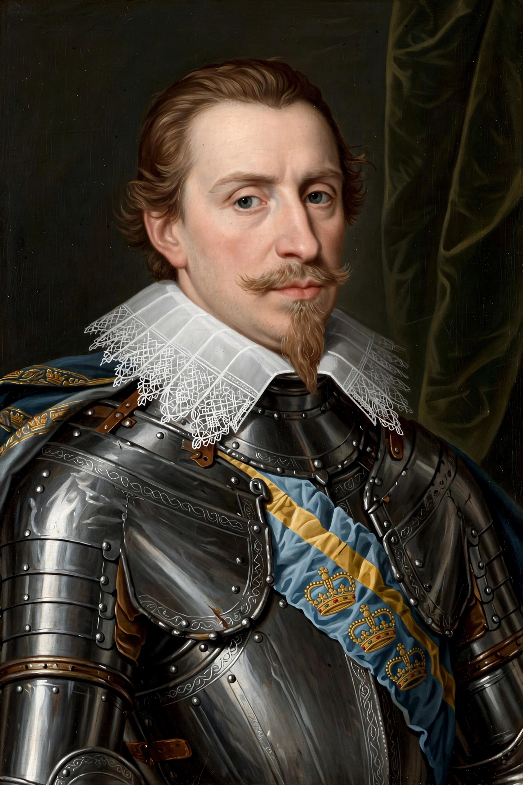

Gustavus Adolphus (9 December 1594 – 6 November 1632), also known in English as Gustav II Adolf, was King of Sweden from 1611 to 1632, and is credited with the rise of Sweden as a great European power. He led Sweden to military supremacy during the Thirty Years' War, helping to determine the political and religious balance of power in Europe, and has been called the 'father of modern warfare' and the 'Lion of the North'.

Inheriting the throne at 16 amid wars with Denmark, Russia and Poland, Gustavus, working with Chancellor Axel Oxenstierna, reformed Sweden's administration, taxation, education and army. He introduced conscription, standardised weapons, mobile field artillery, and combined-arms tactics integrating infantry, cavalry and artillery, with thinner, more flexible formations than the Spanish tercio.
Sweden intervened in Germany in 1630 to defend Protestant interests and Baltic security. Gustavus won a major victory at Breitenfeld in 1631, campaigned deep into Germany, and defeated Wallenstein's forces in part at the Alte Veste. He was killed leading a cavalry charge at the Battle of Lützen in 1632, though Swedish forces won the battle.
His death led to a regency for his daughter Christina under Oxenstierna. Gustavus founded Gothenburg and the University of Tartu, and is commemorated in Sweden on 6 November. Military historians rank him among the great commanders for integrating mobility, firepower and discipline.